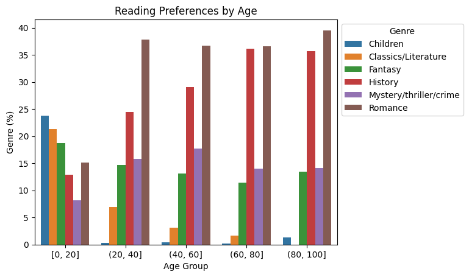

Tutorial 7: Doing more with privacy IDs#
In the previous tutorial, we covered the basics of privacy IDs: how to
initialize a Session where each person appears in multiple rows, and run simple queries.
But privacy IDs also make it easier to run more complex queries, especially those involving multiple
tables. In this tutorial, we will build a
Session that protects library patrons across multiple
tables, and highlight the differences that arise when performing queries on tables with
or without privacy IDs.
Setup#
We import the same collection of packages as in the previous tutorial:
import os
from pyspark import SparkFiles
from pyspark.sql import SparkSession
from tmlt.analytics.binning_spec import BinningSpec
from tmlt.analytics.constraints import MaxRowsPerID
from tmlt.analytics.keyset import KeySet
from tmlt.analytics.privacy_budget import PureDPBudget
from tmlt.analytics.protected_change import AddRowsWithID
from tmlt.analytics.query_builder import QueryBuilder, ColumnType
from tmlt.analytics.session import Session
We’ll use the same checkout logs dataset from the previous tutorial, as well as the library members dataset used in all other tutorials:
spark = SparkSession.builder.getOrCreate()
spark.sparkContext.addFile(
"https://tumult-public.s3.amazonaws.com/checkout-logs.csv"
)
spark.sparkContext.addFile(
"https://tumult-public.s3.amazonaws.com/library-members.csv"
)
checkouts_df = spark.read.csv(
SparkFiles.get("checkout-logs.csv"), header=True, inferSchema=True
)
members_df = spark.read.csv(
SparkFiles.get("library-members.csv"), header=True, inferSchema=True
)
Initializing a Session with multiple IDs tables#
Notice that both of the dataframes we’ve loaded share a common
identifier: the ID associated with each library member. Our goal is to
construct a Session that
protects the addition or removal of arbitrarily many rows that share the
same ID, in both tables. To do so, we have to use the
AddRowsWithID protected change
again, but we also have to indicate that both tables share the same ID space.
This is done as follows.
budget = PureDPBudget(float("inf")) # infinite budget for the session
id_space = "member_id_space"
session = (
Session.Builder()
.with_privacy_budget(budget)
.with_id_space(id_space)
.with_private_dataframe(
"checkouts",
checkouts_df,
protected_change=AddRowsWithID(id_column="member_id", id_space=id_space),
)
.with_private_dataframe(
"members",
members_df,
protected_change=AddRowsWithID(id_column="id", id_space=id_space),
)
.build()
)
print(f"Private dataframes: {session.private_sources}")
Private dataframes: ['members', 'checkouts']
The
Session.Builder.with_id_space
method and the AddRowsWithID
protected change work together to accomplish our desired notion of privacy.
The
with_id_spacefunction defines our ID space,member_id_space. This is how we indicate that the same person is associated with the same ID in both tables.This ID space is then specified to
AddRowsWithID’sidentifierparameter, while theid_columnparameter indicates which column in the dataframe contains the IDs.
With this information, the resulting Session now protects each library member in both tables, irrespective of the number of rows each person contributed to each table.
A more complex query#
To highlight some of the differences that arise when performing transformations with IDs, we’ll walk through a slightly more complex query than was covered in the previous tutorial. Suppose we want to find out the relationship between the age of library members and the genres of books they read most. This information is split across our two private tables. We will perform this computation in three stages.
First, since each book in the checkouts table can be associated with more than one genre, we will expand this table to break out each genre for a book into a separate row.
Second, we will join the expanded checkouts data with the library members data, using the members ID as a join key.
Finally, we will group the joined table by age group and genres, and obtain counts by genres.
Flat maps#
First, let’s expand the checkout dataframe to
associate each book to its genres, with each genre on its own separate row. To do this,
we apply a
QueryBuilder.flat_map
and save it as a view in our existing session.
session.create_view(
QueryBuilder("checkouts").flat_map(
lambda row: [{"genre": genre} for genre in row["genres"].split(",")],
{"genre": ColumnType.VARCHAR},
augment=True,
),
"checkouts_single_genre",
cache=False,
)
print(f"Private dataframes: {session.private_sources}")
Private dataframes: ['checkouts_single_genre', 'members', 'checkouts']
We now have an expanded version of our checkouts table that contains one genre per row.
This example is much like the flat map from the simple transformations tutorial, but there is one key difference: we do not need to provide a
max_rows parameter to the flat_map. The reason is that we are protecting the
number of unique IDs in the table, not the number of rows. Thus, we can generate
arbitrarily many new rows per ID without needing to truncate the output table at this
stage.
Private joins#
Our next step is to join the view we just generated with the library members data and get counts of books read, by genre, for members of each education level.
First, we join the dataframes, and hold the result in another in-session view:
session.create_view(
QueryBuilder("checkouts_single_genre").join_private(QueryBuilder("members")),
"checkouts_joined",
cache=False,
)
The join produces an error, because the ID columns in the two tables have different names:
Traceback (most recent call last):
ValueError: Private joins between tables with the AddRowsWithID protected change are
only possible when the ID columns of the two tables have the same name
To fix this, we can use the QueryBuilder.rename
method to rename the ID column in the members table to match the ID column in the checkouts table:
session.create_view(
QueryBuilder("checkouts_single_genre")
.join_private(QueryBuilder("members").rename({"id": "member_id"})),
"checkouts_joined",
cache=False,
)
print(f"Private dataframes: {session.private_sources}")
Private dataframes: ['checkouts_joined', 'checkouts_single_genre', 'members', 'checkouts']
Let’s inspect the result of the join to make sure it looks right:
session.describe("checkouts_joined")
Columns:
- 'member_id' INTEGER, ID column (in ID space member_id_space)
- 'checkout_date' TIMESTAMP
- 'title' VARCHAR
- 'author' VARCHAR
- 'isbn' VARCHAR
- 'publication_date' INTEGER
- 'publisher' VARCHAR
- 'genres' VARCHAR
- 'genre' VARCHAR
- 'name' VARCHAR
- 'age' INTEGER
- 'gender' VARCHAR
- 'education_level' VARCHAR
- 'zip_code' VARCHAR
- 'books_borrowed' INTEGER
- 'favorite_genres' VARCHAR
- 'date_joined' TIMESTAMP
Using join_private() on two private tables in the same ID space works seamlessly as long as the ID
columns are part of the join and have the same name in both tables. Like with
flat_map(), no truncation is necessary.
Computing the statistic#
Next, we define a KeySet with age
groups and the subset of genres we’re interested in for the analysis…
# Define age groups
# bin edges are [0, 20, 40, ... , 100]
age_binspec = BinningSpec(bin_edges = [20*i for i in range(0, 6)])
binned_age_genre_keys = KeySet.from_dict(
{
"binned_age": age_binspec.bins(),
"genre": [
"Mystery/thriller/crime",
"History",
"Romance",
"Fantasy",
"Classics/Literature",
"Children",
],
}
)
… and use it to group the data and count:
genre_by_age = session.evaluate(
QueryBuilder("checkouts_joined")
.bin_column("age", age_binspec, name="binned_age")
.enforce(MaxRowsPerID(20))
.groupby(binned_age_genre_keys)
.count(),
PureDPBudget(epsilon=2.5),
).toPandas()
Now that our dataset contains all the information we need to determine the relationship between age and genre of choice, we can do a little bit of wrangling and then visualize the result:
import pandas as pd
import seaborn as sns
# convert binned_age to categorical for ease of plotting
genre_by_age["binned_age"] = pd.Categorical(genre_by_age["binned_age"], age_binspec.bins())
age_counts = (
genre_by_age.groupby("binned_age").sum().rename(columns={"count": "age_count"})
)
# compute percentage of each genre in each age group, replace negative values with 0
genre_by_age_pct = genre_by_age.join(age_counts, on="binned_age")
genre_by_age_pct["pct"] = genre_by_age_pct["count"] / genre_by_age_pct["age_count"] * 100
genre_by_age_pct["pct"] = genre_by_age_pct["pct"].clip(lower=0)
ax = sns.barplot(
x="binned_age",
y="pct",
order=age_binspec.bins(),
hue="genre",
data=genre_by_age_pct,
)
ax.set(xlabel="Age Group", ylabel="Genre (%)", title="Reading Preferences by Age")
sns.move_legend(ax, "upper left", bbox_to_anchor=(1, 1), ncol=1, title="Genre")

Interesting! It looks like children are the only readers of children’s books. We may have expected as much, but what else can we learn from this chart?
A note on Session initialization#
You might have noticed that in the Session initialization step, we loaded the members
table using the AddRowsWithID
protected change; even though in tutorials 1 through 5, we used it with
AddOneRow. For this table, both
options are possible: there is exactly one row per person, and a unique identifier for
each person. In such cases, which protected change should you choose?
Typically, the right choice is to use
AddRowsWithID, for a couple of
reasons.
Data preparation is generally more convenient when using privacy IDs, because you don’t need to worry about truncating your data (when performing e.g. flat maps or joins) until immediately before aggregation.
Truncation as a last step before aggregation can lead to better utility. Plus, if you want to compute multiple aggregations, you might also want to use different truncation parameters for each.